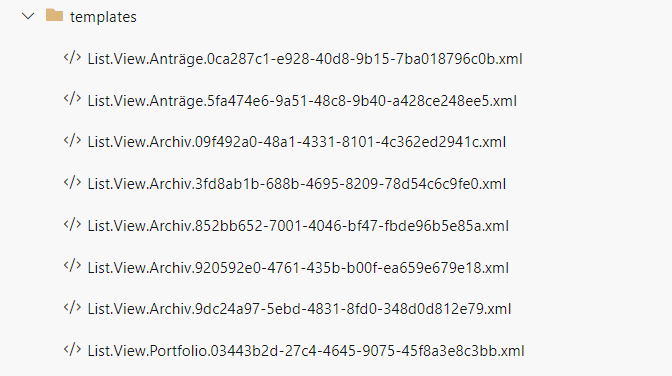

Export / Import list formatting
Summary
SharePoint Online provides user interface for defining column and view formatting and forms configuration:
- Use view formatting to customize SharePoint,
- Show or hide columns in a list or library form and
- Configure the list form.
However, the Get-PnPSiteTemplate -Handlers Lists command does not include these customizations. These scripts bridge this gap.
The Get-ListFormatting script exports:
- form customizers
- list views
- list views formatting
- columns formatting
to a set of json, csv and xml files. The Set-SPOListFormatting applies the exported customizations to an existing list.

Use it with Get-PnPSiteTemplate and Invoke-PnPSiteTemplate for a full export / import capabilities.
function Get-ListFormatting {
[CmdletBinding()]
param (
[Parameter()]
[string]
$listName,
[string]
$folderPath
)
$clientContext = Get-PnPContext
$list = Get-PnPList $listName -Includes SchemaXml
# Currently only Item content type is supported. The script may be easily adapted to enumerate through all the available content types
$contentType = Get-PnPContentType -List $listName | Where-Object { $_.Name -eq "Item"}
$clientContext.Load($list.Views)
$clientContext.Load($contentType)
$clientContext.Load($contentType.FieldLinks)
$clientContext.ExecuteQuery()
# 1. Get form customizer
$contentType.ClientFormCustomFormatter | Out-File "$folderPath\ListFormatting.Form.$listName.json"
# 2.Get fieldLinks settings
$contentType.FieldLinks | Select-Object Name, Hidden, Id | Export-Csv "$folderPath\ListFormatting.ColumnOrder.$listName.csv" -NoTypeInformation
# 3. Get list views
$listUrl=$list.RootFolder.ServerRelativeUrl+"/"
$list.Views | Where-Object { $_.PersonalView -eq $false } | Select-Object Title, Id, @{name = "Url"; expression = { $_.ServerRelativeUrl.Replace($listUrl,"").Replace(".aspx","") } } | Export-Csv "$folderPath\List.Views.$listName.csv" -NoTypeInformation
$list.Views | ForEach-Object {
$v = Get-PnPView -List $list -Identity $_.Id -Includes HtmlSchemaXml
$v.HtmlSchemaXml | Out-File "$folderPath\List.View.$listName.$($_.Id).xml"
}
#get list views formatting
$views = $list.Views | Where-Object { $null -ne $_.CustomFormatter }
if($null -ne $views){
$views | Select-Object Title, Id | Export-Csv "$folderPath\ListFormatting.Views.$listName.csv" -NoTypeInformation
$views | ForEach-Object {
$_.CustomFormatter | Out-File "$folderPath\ListFormatting.View.$listName.$($_.Id).json"
}
}
#get columns formatting
$columns= Get-PnPField -List $listName | Where-Object {$null -ne $_.CustomFormatter }
if($null -ne $columns){
$columns | Select-Object InternalName | Export-Csv "$folderPath\ListFormatting.Columns.$listName.csv" -NoTypeInformation
$columns | ForEach-Object {
$_.CustomFormatter | Out-File "$folderPath\ListFormatting.Column.$listName.$($_.InternalName).json"
}
}
}
function Set-ListFormatting {
[CmdletBinding()]
param (
[Parameter()]
[string]
$listName,
[string]
$folderPath
)
if (Test-Path -Path $folderPath){
Write-Host "LIST $listName "
$clientContext = Get-PnPContext
$list = Get-PnPList $listName
#Get Content Type
$contentType = Get-PnPContentType -List $listName | Where-Object { $_.Name -eq "Item" -or $_.Name -eq "Element" }
$clientContext.Load($contentType)
$clientContext.Load($contentType.FieldLinks)
$clientContext.ExecuteQuery()
# 1. Set form customizers
if ($t=Test-Path -Path "$folderPath\ListFormatting.Form.$listName.json" -PathType leaf){
Write-Host "Setting form customizers from $folderPath\ListFormatting.Form.$listName.json"
$contentType.ClientFormCustomFormatter = (Get-Content -Raw -Path "$folderPath\ListFormatting.Form.$listName.json").ToString()
Write-Host "...done"
}
# 2.a Set fieldLinks order
if ($t=Test-Path -Path "$folderPath\ListFormatting.ColumnOrder.$listName.csv" -PathType leaf) {
Write-Host "Setting fields order from $folderPath\ListFormatting.ColumnOrder.$listName.csv"
$ColumnOrder = (Import-Csv "$folderPath\ListFormatting.ColumnOrder.$listName.csv").Name
$contentType.FieldLinks.Reorder($ColumnOrder)
Write-Host "...done"
}
# 2.b Set fieldLinks.Hidden
if ($t = Test-Path -Path "$folderPath\ListFormatting.ColumnOrder.$listName.csv" -PathType leaf) {
Write-Host "Setting hidden fields from $folderPath\ListFormatting.ColumnOrder.$listName.csv"
Import-Csv "$folderPath\ListFormatting.ColumnOrder.$listName.csv" | ForEach-Object{
$contentType.FieldLinks.GetById($_.Id).Hidden = [System.Convert]::ToBoolean($_.Hidden)
}
Write-Host "...done"
}
$contentType.Update(0)
$clientContext.ExecuteQuery()
# 3. Set list views
if ($t = Test-Path -Path "$folderPath\List.Views.$listName.csv" -PathType leaf) {
Write-Host "Setting views"
#Get All List Views
$clientContext.Load($list.Views)
$clientContext.ExecuteQuery()
$listUrl=$list.RootFolder.ServerRelativeUrl+"/"
$views = $list.Views | Select-Object Title, @{name = "Url"; expression = { $_.ServerRelativeUrl.Replace($listUrl, "").Replace(".aspx", "")}}
Import-Csv "$folderPath\List.Views.$listName.csv" | ForEach-Object {
$xml = [xml]( Get-Content "$folderPath\List.View.$listName.$($_.Id).xml" -Raw)
$isDefault = [boolean]$xml.View.DefaultView
$fields = $xml.View.ViewFields.FieldRef.Name
$query = $xml.View.Query.InnerXml
$aggregations = $xml.View.Aggregations.InnerXml
$viewType2 = $xml.View.ViewType2
$url = $_.Url
$viewTitle = ($views | Where-Object { $_.Url -eq $url } ).Title
if($null -ne $viewTitle){
Write-Host "Updating view $viewTitle to $($_.Title)"
$v = Set-PnPView -List $listName -Identity $viewTitle -Fields $fields -Values @{Title = $_.Title; ViewQuery = $query; ViewType2 = $viewType2 } -Aggregations $aggregations
}
else{
Write-Host "Creating view $($_.Title)"
#cannot set view url when creating the list. the following workaroud required
$v = Add-PnPView -List $listName -Title $_.Url -SetAsDefault:$isDefault -Fields $fields -Query $query -Aggregations $aggregations
$v = Set-PnPView -List $listName -Identity $_.Url -Values @{Title = $_.Title ; ViewType2 = $viewType2}
}
}
}
#Set list views formatting
if ($t=Test-Path -Path "$folderPath\ListFormatting.Views.$listName.csv" -PathType leaf){
Write-Host "Setting list views formatting"
#Get All List Views
$clientContext.Load($list.Views)
$clientContext.ExecuteQuery()
$views = $list.Views.Title
#Get exported Views Info (Title & Id)
Import-Csv "$folderPath\ListFormatting.Views.$listName.csv" | ForEach-Object{
#If target list contains the view and the file exists
if ($views.Contains($_.Title) ) {
# Update the List View Formatting Definition
$listViewFormattingJSON = Get-Content -Raw -Path "$folderPath\ListFormatting.View.$listName.$($_.Id).json";
$listViewColumnDefinition = Get-PnPView -List $listName -Identity $_.Title
$listViewColumnDefinition | Set-PnPView -Values @{CustomFormatter = $listViewFormattingJSON.ToString() }
}
}
}
#Set columns formatting
if ($t=Test-Path -Path "$folderPath\ListFormatting.Columns.$listName.csv" -PathType leaf) {
Write-Host "Setting columns formatting"
#Get All List Columns
$clientContext.Load($list.Fields)
$clientContext.ExecuteQuery()
$columns = $list.Fields.InternalName
Import-Csv "$folderPath\ListFormatting.Columns.$listName.csv" | ForEach-Object { #$columns.Contains($_.InternalName)
if ($columns.Contains($_.InternalName)){
Write-Host "Setting formatter for $($_.InternalName)"
$ColumnFormattingJSON = Get-Content -Raw -Path "$folderPath\ListFormatting.Column.$listName.$($_.InternalName).json";
$listColumnDefinition = Get-PnPField -List $listName -Identity $_.InternalName
$listColumnDefinition | Set-PnPField -Values @{CustomFormatter = $ColumnFormattingJSON.ToString() }
}
}
}
}
}
### Example usage
$list1= "MyList1"
$folderPath= "C:\SPO\Templates"
Connect-PnPOnline -Credentials $PSCredentials -Url $siteUrl
##Export
Get-PnPSiteTemplate -Out "$folderPath/ListTemplates.xml" -ListsToExtract $list1 -Handlers Lists
Get-ListFormatting -folderPath $folderPath -listName $list1
##Import
Invoke-PnPSiteTemplate -Path "$folderPath/ListTemplates.xml"
Set-ListFormatting -folderPath $folderPath -listName $list1
Check out the PnP PowerShell to learn more at: https://aka.ms/pnp/powershell
The way you login into PnP PowerShell has changed please read PnP Management Shell EntraID app is deleted : what should I do ?
Contributors
| Author(s) |
|---|
| Kinga Kazala |
Disclaimer
THESE SAMPLES ARE PROVIDED AS IS WITHOUT WARRANTY OF ANY KIND, EITHER EXPRESS OR IMPLIED, INCLUDING ANY IMPLIED WARRANTIES OF FITNESS FOR A PARTICULAR PURPOSE, MERCHANTABILITY, OR NON-INFRINGEMENT.